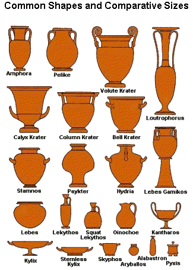

The Greek Myths:
Figure Painting of Gods and Heroes
Pottery painters in Attica were the first to paint
narrative scenes from popular myths about their Gods and Heroes;
episodes from Homer's Epics, the Iliad and Odyssey, featuring
such gods as Apollo or Dionysos and heroes such as Achilles
or Herakles and his Twelve Labours or Exploits.
Unlike the strange deities of the Egyptians, Mesopotamians
and Persians, the Greek Gods and Heroes were believed to be
human in form though larger, more powerful and physically perfect
etc. Images or paintings of Gods or Heroes could therefore be
based on human models.
This is the key to why figure drawing, painting
and sculpture in Greece improved so dramatically during the
6th and 5th centuries. The realism, life-like and three-dimensional
qualities achieved were beyond that of any other civilization
hitherto.
Competition between artists to achieve the most
natural representation of a God or a Hero reached fever pitch
by the early 5th century.
Attic Black-Figure Painting
 032
Early Attic Black-figure jug, painted in black, purple and white
on orange clay, ca. 600-575BC BM
032
Early Attic Black-figure jug, painted in black, purple and white
on orange clay, ca. 600-575BC BM
Athenian painters copied this black-figure style from Corinth
but, instead of the Oriental monsters, animals and birds motifs,
preferred to develop further their own narrative style using
Greek Gods, Heroes and monsters. The superior quality of their
clay, pigment, and decoration and firing techniques quickly
enabled the Athenian artists to overtake those of Corinth. This
jug shows a rich black vitrified slip paint and also the matt
grape red iron slip.
 032a
Detail Head of Gorgon
032a
Detail Head of Gorgon
This detail of the head of the Medusan
Gorgon shows how these Greek artists endowed their figures
with mood and character by means of scratched lines in black
slip. Monotony was avoided by the use of different poses, gestures,
and expressions to render emotion and clarify the narrative
action.
 033
Part of a black-figured amphora.
033
Part of a black-figured amphora.
The scene on this prize amphora shows a victorious athlete offering
wine, and his thanks, to the God Dionysos.
 033a
Closer detail
033a
Closer detail
This detail shows more clearly the painting of the hands and
clothing of the god, illustrating the power of the scratched
lines to provide so much naturalistic detail.
The Finest (Mature) Black-Figure Painting ca. 540-520BC.
From 600 BC on, Athens increasingly became the
dominant center for Greek pottery, eventually exporting its
ware throughout the Mediterranean world. It was during this
period that the practice of signing of pots by potters and painters
first became common. The overall finish and high quality of
Attic pots was commonplace by the later 6th century BC. The
drawing on Greek ware of this period is also usually of the
highest quality. Always an inexhaustible mine of information
for scholars on Greek life, literature and thought, the repertoire
of subjects greatly expanded to include scenes from everyday
life as well as the standard heroic and mythological themes.
 034
Athenian Jar from Vulci (Etruria) ca.540-530BC ht:61cm.
The heavenly Twins, the Dioscuri, Castor and Pollux return home
after some heroic exploit: hunting, fighting, carrying off women,
and cattle rustling etc. There are many tales. The pot is signed
by the Painter Exekias. Our particular interest is the quality
of the slip painting.
034
Athenian Jar from Vulci (Etruria) ca.540-530BC ht:61cm.
The heavenly Twins, the Dioscuri, Castor and Pollux return home
after some heroic exploit: hunting, fighting, carrying off women,
and cattle rustling etc. There are many tales. The pot is signed
by the Painter Exekias. Our particular interest is the quality
of the slip painting.
 034a
Closer detail: The dog greets one of his masters.
034a
Closer detail: The dog greets one of his masters.
The Athenians retained the Corinthian use of animal friezes
for decoration until c. 550 BC, when the great Attic painters,
among them Exekias and the Amasis Painter, developed a Greek
narrative scene decoration and perfected the classical black-figure
style. Corinth and Athens were the most important studios producing
black-figure pottery but there were others in Sparta and some
of the Greece colonies.
 034b
The other side of the amphora above.
034b
The other side of the amphora above.
Achilles and Ajax,the two great heroes and warriors in the Trojan
War, are seen playing at dice, both in full armour ready for
battle.
 034c
Closer detail:Achilles and Ajax
034c
Closer detail:Achilles and Ajax
Inscribed on the picture, rather like the bubbles in a 20th
century cartoon, are greek words, appearing from their mouths.
They tell us that Achilles (left) has called 'four' and Ajax
'three'.
 034d
Detail:Head of Achilles
034d
Detail:Head of Achilles
The fine detail of the helmet and armour can be seen here. All
of this produced by scratched lines in a black slip.
This could provide ideas for many slip decorators, couldn't
it?
 035
Attic black figured Kylix 6th c. BC.
035
Attic black figured Kylix 6th c. BC.
This is a typical drinking cup or disk - the kylix. Decorated
both inside and outside with a variety of scenes. The foot and
hollow stem can be seen and painted around the outside of the
bowl are two winged monsters and a charioteer. Of particular
interest here is the introduction of white slip in attic black-figure
painting. It was not easy to use. If thick it often peeled off. (see
Potter's Notes later on.)
 035a
Inside bowl decoration of Attic black figured Kylix 6th c.BC.
035a
Inside bowl decoration of Attic black figured Kylix 6th c.BC.
Inside the bowl of this drinking cup is this beautiful piece
of black-figure decoration showing the God Dionysos sailing
the Seas. Climbing around the mast is a grape vine - suitably
fully laden for the God of Wine. The water is filled with a
school of dolphins playing. The disposition of each object within
the circular form has been well considered and carefully balanced.
We know the name of the painter, Exekias, living in the mid-sixth
century BC.
 035b
Detail of center
035b
Detail of center
Here we can see the fine detail in the figure of the God. He
is shown dressed and crowned like a king. The boat, dolphins,
grapevine, and sail are each superbly delineated. Technically,
there is perhaps one defect; the poor fit of the matt white
slip which originally covered the sail. Much has rubbed or flaked
off. It appears to have been painted over the black vitreous
slip. (Read potter's notes)
 036
Attic Black-Figure Hydria: ca.520-500BC ht 22.5in.
036
Attic Black-Figure Hydria: ca.520-500BC ht 22.5in.
A Hydria is the Greek name for a pot with three handles. Two
for lifting and one for pouring. This pot was used for fetching
water from the local fountain. The painting illustrates this.
Under a portico, young women are filling their pots with water
from these ornamental fountains. Athenian pottery of the 6th
century BC often features such narrative scenes composed of
black figures painted on a light red inset background panel,
while the surrounding vase surface is a deep, lustrous black.
As in the previous example, when white slip often tends to flake
off.
 036a
Closer detail: showing a few problems
036a
Closer detail: showing a few problems
This detail shows up more clearly two defects most potters are
aware of: (1.)The black slip was probably too dry when the lines
were scratched through - the edges cracked and the lines are
rough and (2.)White slip is flaking off - probably applied too
thickly (see Potter's Notes later on).
 037
Tiny funeral oil flask ca.500BC ht:11.5cm
037
Tiny funeral oil flask ca.500BC ht:11.5cm
This is typical of the vast mass-produced market for small (
five inches high) lekythoi, that contained the oil used in a
funeral ceremony. This one has lost the funnel mouth at the
neck, but is otherwise complete. From a potter's point of view
it has considerable interest. The rough basic hollow shape was
thrown on a potter's wheel. Unlike a more prestigious item,
where more time and care would be taken, this little pot was
one of many being made and decorated at speed in a day or two.
This is repetition pottery.
 037a
Centered hole in foot
037a
Centered hole in foot
When leather-hard, it was turned horizontally on a lathe (exactly
like wood turning) to the required form. Underneath the center
of the foot is a small hole made by the center spike of the
lathe. Normally you can't see this in a museum. The black slip
line banding was quickly brushed on whilst still on the lathe.
 037b
Detail of warrior painting.
037b
Detail of warrior painting.
This detail shows accidental "chattering" marks and
scoring grooves from a worn turning tool or too dry a pot. Many
finishing problems haven't changed over millennia!
 037c
Detail showing the top of pot. diam 5.2cm.
037c
Detail showing the top of pot. diam 5.2cm.
This view of the neck and top of the pot shows the squashed
base of the little handle roughly joined to the shoulder with
slip and bent over to be smoothed against the neck. The broken
neck shows where the cup-like funnel would have been. The various
motifs in the banding patterns around the shoulder show all
the signs of haste and a need to simplify; evidence of mass-production.
 037d
Detail of figure painting.
037d
Detail of figure painting.
This group of two horses and a rider is less than 5 cm. high.
A painter with some talent and probably years of repetition
produced these lively images - at speed. The brush strokes and
scratched outlines were made quickly with confidence.
 038
Black figured amphora (jar) Made in Athens about 520-500BC.
BM. Black figured amphora (jar) with Dionysos and two
satyrs. Made in Athens about 520-500BC. Attributed to the painter
Psiax and signed on the rim by Andokides as the potter. The
body of this pot is covered with a deep black lustrous slip
glaze. The only decoration is the painting on the neck.
038
Black figured amphora (jar) Made in Athens about 520-500BC.
BM. Black figured amphora (jar) with Dionysos and two
satyrs. Made in Athens about 520-500BC. Attributed to the painter
Psiax and signed on the rim by Andokides as the potter. The
body of this pot is covered with a deep black lustrous slip
glaze. The only decoration is the painting on the neck.
 038a
Neck detail: Dionysos and two Satyrs
038a
Neck detail: Dionysos and two Satyrs
The god of wine holds a drinking horn in one hand and a vine
branch in the other. Either side is a drunken dancing satyr.
 038b
Detail: Figure of Dionysos A closer view shows more clearly
the crisp scratched patterns and lines. The small amount of
purple plum color for the beard, and decorative spots and bands
gives extra life to the costume and figure. In this example,
some edges of the black paint and also the delicately painted
fingers of the satyr have slightly re-oxidized to red in the
cooling kiln.
038b
Detail: Figure of Dionysos A closer view shows more clearly
the crisp scratched patterns and lines. The small amount of
purple plum color for the beard, and decorative spots and bands
gives extra life to the costume and figure. In this example,
some edges of the black paint and also the delicately painted
fingers of the satyr have slightly re-oxidized to red in the
cooling kiln.
Potter's Notes (1) on ... Greek Black-figure Painting Technique
- The Origins: A technique of using a dark
brown-black slip for painting, was used by the potters of
the Aegean all through the 2nd millennium BC, refined and
improved over a long period by observation and trial and error.
Look at the Cretan and Mycenaean examples. This Attic Geometric
pot of the 8th-7th centuries BC is differently decorated but
the body and the slip are little changed. But a Corinthian
pot of about 600BC shows much more sophisticated black-figure
ware. Building on much of this the potters of Attica carried
the black-figure style to perhaps the highest state of perfection
as seen on this 5th century Attic Black-Figure pot. This superb
black-figure painting is the result of a combination of even
more careful selection and preparation of materials, expert
decorators, efficient updraft kilns (T3) and well-controlled
firings.
- The clay bodies used were mostly locally refined red earthenware
clays which fired orange or brick red at about 950°Centigrade.
- Pots were thrown on a wheel, in pieces if necessary, then
joined together with slip. Handles were molded separately
and fixed on last, before decorating
- When leather-hard, many small pots were also turned horizontally
on a lathe to refine the thickness and shape. A wash of yellow
ochreous clay was then brushed on to produce a richer terracotta
color Much can be seen in this small mass-produced funeral
oil pot. The underneath of the foot is paler and has no shine.
At the center is the small hole caused when turning on a lathe.
- The Black Vitreous Slip: This was achieved
using a local red (iron rich)clay, often the same clay as the
body but with added soda or potash (alkali flux) in some form.
- Characteristics of slip: Small particle
size - achieved by levigation rather than grinding; sufficient
alkali to cause the slip to begin to melt at about 900°Centigrade
- this came from soluble soda or potash minerals, maybe from
plant ash. Urine is also thought to have been used to improve
the brushing quality. The slip was evaporated to concentrate
the flux minerals and to produce a thick smooth slip for brush
painting.
- The firing process: This was the key to
achieving a fired pot with buff to red body, smooth but somewhat
porous, decorated with brush painting in a dense shiny black (vitreous)slip.
- The Method : A red bodied pot decorated
with the "red clay slip + alkali paint" is fired
in a wood fired kiln. When the temperature reaches 800°C
the vents are closed and probably enough different or damp
fuel used to make the kiln become smoky (reduced atmosphere)
and short of oxygen but allowing the temperature to still
rise slowly. The red iron oxide in the body and the slip changes
to the (black)iron oxide (containing less oxygen). Of course,
this change cannot be seen in a red hot kiln!
The smoky atmosphere continues until the time the temperature
has gone beyond 900°C when the alkali and the black iron
in the painting slip will begin to cause this clay slip to
melt, producing a shiny surface.
When about 950°C.is reached, the temperature is then allowed
to drop to below 800°C. whilst the smoky (reduced) atmosphere
continues. By this time the vitreous slip will have cooled
sufficiently to become an impervious glassy film.
After dropping below 800°C. the dampers are opened to
allow enough air in to clear the smoky atmosphere. Although
this is still at red heat and cannot be seen, the black iron
oxide present throughout the porous clay body absorbs more
oxygen and returns to its original stable state of RED iron
oxide. However, the black iron oxide in the vitreous slip
is now trapped in a glassy film. It cannot re-absorb any oxygen,
so remains as BLACK iron oxide.
When the kiln and pots are cool the body becomes the orange-red-brown
of common fired earthenware clay, but the dull brown iron
slip, thickly painted on, has been transformed into a lustrous
black paint.
- Practical points to bear in mind:
1. Painting Slip. Test various red clay slips.
A slow but simple way of obtaining a fine particled slip is
by thinning a pourable red slip with an extra quarter or half
of its volume of water. You will need to make up a small bucketful
of slip to test. Allow to stand for a while when the coarser
particles will have settled out, then take off a jug full
of slip from the top layer and evaporate it until it becomes
thick enough to be a brushable paint.
2. Flux material. Probably the simplest alkali
to add is soda ash, but you can try other soluble materials
containing soda or potash. Again you will need to experiment
to find the best amount to add. Try a teaspoonful of soda
ash to a 1/2 pint of slip to start with. Dissolve it first
in a very small amount of hot water, then add and stir the
slip thoroughly.
3. The matt purple slip:
This dry-looking purple
was produced using a slip paint made from a high iron ore
mineral or clay but with no flux added. The iron ore mineral
Crocus Martis is worth trying to obtain this color
4. The matt white slip:
Occasionally used. It could be any iron-free white clay. The
problem of white slip flaking off , which is often seen, happens
because natural clays which fire white are usually more refractory
than common red clay so tend not to fit too well on red clay,
especially if painted rather thickly.
5. Re-oxidised black slip:
Sometimes through thinness of slip application, lack of flux
or by accidental flame-flashing the black slip re-oxidises;
becoming RED instead of black when cold.
[1] Ringed area showing re-oxidized "black" slip
on the right side of shoulder. This change to red is especially
obvious here on such a wide band of slip
[2] Color lost on horses legs - probably thin slip, maybe
not enough flux either.
[3] Fingers are part oxidized - probably brush stroke became
very thin. Most of the edges of the black slip clothing have
oxidized, presumably thin. Notice that the scratched lines
cut through the inner (thicker?) area of slip are sharp, with
no re-oxidised edges.
Attic Red-Figure Painting
 039
Red-figure Attic cup or Kylix by the Painter Epiktetos. The
scenes include Theseus slaying the Minotaur, ca.520BC Diam 11.6in.
039
Red-figure Attic cup or Kylix by the Painter Epiktetos. The
scenes include Theseus slaying the Minotaur, ca.520BC Diam 11.6in.
Red-figure pottery, invented at Athens about 530 BC, is just
the reverse of the black-figure style. In the black-figure style,
figures were painted in glossy black pigment as silhouettes
on the orange-red surface of the vase; details were added largely
by incising.
 040
Andokides Painter. From a red-figure amphora:Herakles and the
two-headed dog Cerberus. ht:58.6cm. ca.510BC
040
Andokides Painter. From a red-figure amphora:Herakles and the
two-headed dog Cerberus. ht:58.6cm. ca.510BC
In the red-figure style, figures were first outlined in black,
with the background outside the outline filled in solidly with
black paint. This left the figure red; details could be then
be painted in rather than incised. Occasionally some white or
the dull purple paint was used as well as the glossy black slip.
The Zenith of Greek Pottery Painting
 041
Attic red figure amphora c.500-480 BC. Fr. Nola - warrior by
the Berlin painter
041
Attic red figure amphora c.500-480 BC. Fr. Nola - warrior by
the Berlin painter
This painting is by a pottery painter known only as Berlin
because of the superb quality of his painting style recognized
first on amphora f2160 in the Berlin museum. It illustrates
the apparently simple but in reality momentous change that occurred
in Greek painting around 500BC. as artists continued to explore
ways of representing figures more naturally; they discovered
a new way of drawing. The closer detail of the feet in the next
image shows the result of these experiments.
 041a
Detail of painting
041a
Detail of painting
The painted view of each foot is different. The right foot is
seen from the traditional side view. The left foot is seen from
the front. In doing so Greek artists discovered "foreshortening"
- a way of suggesting spatial distance in two dimensions. From
the front of the toes to the leg and ankles is perhaps 5-6inches
back. This way of suggesting depth on a flat surface was a new
discovery. It was the beginning of a quite new a way of drawing
or painting a figure, a believably naturalistic representation
of the human body on a flat surface.
 042
Attic red-figure Bell Krater.ht:33cm. Ganymede by the Berlin
Painter. ca.490-480BC LP.
042
Attic red-figure Bell Krater.ht:33cm. Ganymede by the Berlin
Painter. ca.490-480BC LP.
Another piece of beautiful figure painting, by the same painter,
which also illustrates this great achievement of Greek painting.
Around 500 BC Greek artists had abandoned the convention of
using only profile views and began to use three-quarter frontal
poses, as well as foreshortening. Their technique of figure
drawing would become the basis of the Western European style
of painting.
 043
Athenian red figure cup by Brygos 500-475 BC.
043
Athenian red figure cup by Brygos 500-475 BC.
The conflict depicted on the outside of this drinking cup is
the Sack of Troy. Whilst retaining the form of a band or frieze,
the painter tries to paint the action of this scene in depth
too.
 043a
Detail of the painting
043a
Detail of the painting
This detail shows the strongly delineated figures overlapping
one another in a very convincing and naturalistic manner. There
is a sense of rapid, often violent, movement. This new style
of movement and naturalism and space in painting is now developing
fast.
 044
Maenad, from an amphora painted by the Painter known as Kleophrades.
ht:56cm. ca.500-490BC
044
Maenad, from an amphora painted by the Painter known as Kleophrades.
ht:56cm. ca.500-490BC
This new technique allowed more flexibility in the rendering
of human form, movement, and, above all, expressions. It also
gave a greater scope for shading and a more satisfactory kind
of foreshortening and perspective.
 045
Kleophrades Painter. Detail of Dionysos on a red-figured amphora.ht:56cm.
ca.500-490BC
045
Kleophrades Painter. Detail of Dionysos on a red-figured amphora.ht:56cm.
ca.500-490BC
Since most of the ornamentation on Greek pottery was narrative
rather than purely decorative, such technical advantages were
of utmost importance when naturalism in figure painting was
becoming the prime aim.
From the late 6th to the late 4th century BC. most of the more
important pieces were painted in this new style.
 046
Athenian vase late red figure ware ca.460-50 BC MN Naples This
painting of Achilles slaying the Amazon Pentesilea illustrates
again the desire for strong dramatic movement. These images
illustrate the zenith of Greek pottery design and also give
us some idea of what was being achieved in large-scale mural
painting at this time.
046
Athenian vase late red figure ware ca.460-50 BC MN Naples This
painting of Achilles slaying the Amazon Pentesilea illustrates
again the desire for strong dramatic movement. These images
illustrate the zenith of Greek pottery design and also give
us some idea of what was being achieved in large-scale mural
painting at this time.
 047
Attic red-figure amphora ca.450BC. ht:60cm.
047
Attic red-figure amphora ca.450BC. ht:60cm.
This is a detail of the full figure of Achilles painted on this
pot. The bold but calm naturalistic style of this painter has
been admired and recognized on other pots that have been found.
However, we know him only by the name "the Achilles Painter",
who worked around 450BC. What would a colored mural painting
in this style have been like? We know they existed, they were
written about, but unfortunately none have survived.
Painting on a White Slip Ground
 048
Calyx Krater - figures on white slip
048
Calyx Krater - figures on white slip
This last technique shows how the pottery decorators longed
to have the freedom to paint like mural painters on a plaster
surface. The painting on this flower-shaped vase or krater started
out as a band of red figure decoration surrounded by the shiny
black slip background. But the flat center band was painted
with a thin even layer of white slip. Generally this survived
quite well. On this an outline drawing of the figures was painted
in red or black slip and then fired. Finally a gouache type
paint probably similar to that used by the mural painters produced
the subtle naturalistic colored effects seen on all the following
images. Sadly time, wear and tear and damp have worn away much
of the brightest color
 049
High stemmed Kylix - black silhouettes on white slip
049
High stemmed Kylix - black silhouettes on white slip
On the outside of this elegant drinking cup - a group of Fighting
Cocks painted in black vitreous slip. Against the white ground,
they stand out dramatically.
 050
Funeral lekythoi. BM
050
Funeral lekythoi. BM
A Museum Case of Funeral Lekythoi: figure painting on a white
ground. Understandably, this more naturalistic style of decoration
became very popular. Many of these offerings have survived;
the drawings usually include portraits, probably idealized,
of the dead person.
 051
Lekythos painted by the Achilles Painter, ca.450-440BC.
051
Lekythos painted by the Achilles Painter, ca.450-440BC.
A painting of the dead woman in the Afterlife. It was this artist
who painted the figure of Achilles seen earlier in a detail.
This is a quiet, introspective style of figure painting with
marvelous detail.
 051a
Detail: Showing more clearly the sensitive line drawing by
this Achilles Painter- ca.450-440BC.
051a
Detail: Showing more clearly the sensitive line drawing by
this Achilles Painter- ca.450-440BC.
The outline drawing and some dark detail such as the hair
were painted in the black slip. Some of the lighter brown,
and dull purple slip colors were also used for part of the
costume and hair. After being fired, any non-ceramic color
paint would then have been used. This delicately drawn image
of a girl playing a lyre forms the right-hand side of the
whole picture around the pot.
 051b
The whole painting around this lekythos
051b
The whole painting around this lekythos
In this reconstruction, I have joined together both views
of the painting on this pot; it is the complete scene. On
the left, the dead woman gazes across at her own shade, now
a Muse, or Goddess of Music and Poetry, in the Afterworld.
Her spirit is indicated by the bird. It is difficult not to
be affected by the mood of gentle sadness which the Achilles
Painter created sometime around 450BC.
 052
Athenian Lekythos late 5th c. BC.NAM
052
Athenian Lekythos late 5th c. BC.NAM
Athenian Lekythos late 5th c. BC. This shows a man, a dead warrior,
seated outside his tomb. He stretches up his arm to grasp his
spear, his shield rests nearby. Naturalism in figure painting
has been achieved. The relaxed, languid, even sad, figure, is
completely convincing. A mourner stands on the left. Although
in poor condition, sufficient has survived to see the quality
of the drawing and the remains of the post-firing color that
was added. The blue color is probably the same finely ground
blue frit that the Cretans used for wall painting. Look at the
details next.
 052a
Detail:Seated man outside his tomb.
052a
Detail:Seated man outside his tomb.
This detail shows a sensitive fluid line drawing that captures
the important details and presents us with a three dimensional
image in the form of a seated young man. Such drawing is the
work of an accomplished artist.
 052b
Detail: Head of man
052b
Detail: Head of man
Detail of the man's head. We don't expect to see such dynamic
line drawing until perhaps the 15th century in Europe during
the Italian Renaissance. Since no easel paintings or wall murals
have survived from classical Greece, contemporary ceramic decoration
gives us a glimpse of what Greek wall painting must have been
like in the 5th century BC. This is why Greek pottery has such
a special place in the history of Art - and European painting
in particular.
Potter's Notes (2) on ... The Absence of Colored
Glazes
Some Thoughts: It perhaps comes as a surprise
to realize that, having become so proficient in the complex
process of making and firing the shiny black vitreous slip,
Greek potters were never interested in using colored glazes
on their pots.
No interest in Persian Glazes or Frit Paste Colors:
As inveterate travelers they must have been well aware of
the colorful ceramic products in contemporary Egypt and Persia.
Alkaline Glazes were probably thought brash and foreign;
and certainly not easy to control: The sharp refined
lines of Greek drawing would probably not have been possible
using any contemporary frits and "glazes" then available.
The Greek Ceramic Style: Classical Greek terracotta
pottery and ceramic painting had by the fifth century BC. developed
as far as it could. The spurt of invention and experiment in
Greek ceramics had run its course for the time being. They had
perfected a ceramic painting system using buffs, browns, dull
purples and white slip plus a lustrous vitreous black slip on
the terracotta or buff colored clay. Colored glazes and other
developments would have to wait for later pottery innovators.
The last intriguing questions: Perhaps they
simply didn't choose to develop colored glazes in ceramics.
It is possible they were considered un-Greek. No wall paintings
have survived so we cannot really know how softly - or richly
- colored were their wall-paintings compared with their ceramics!
The Decline of Greek Pottery
- in the mid-5th century BC.
From a potter's point of view the story and interest
in Greek pottery is now practically over. The decline began
surprisingly early, well before the end of the 5th century BC.
and there are probably many causes. The inherent limitations
of the curving pot surface and the limited colors, meant that
pottery painters could no longer compete with the rapid strides
toward naturalism taken by painters of larger works such as
wall paintings. The following images illustrate this decline.
The most inventive artists no longer wanted to design or decorate
terracotta pottery; they preferred the color and breadth of
wall painting or other crafts.
 053
A late 5th century BC. Attic Krater: preparations for a theatrical
performance.
053
A late 5th century BC. Attic Krater: preparations for a theatrical
performance.
Various attempts to introduce spatial depth into their designs
by the selective grouping of figures were not very successful.
This 5th century attic krater shows a crowded scene; the preparations
for a theatrical performance. The different levels destroy any
attempt at reality. To build such scenes at different levels,
you need to understand the principles of linear or geometric
perspective and, as far as we can tell , the Greeks never did
discover this.
 054
Detail of florid style painting on a hydria made ca.410BC. After
430 BC pottery painting was increasingly trivialized in conception
and sentimental in emotional tone. Drawing became over-refined
and careless, and groups of figures were crowded together without
meaning or interest. Basically this is a Red-Figure painting
by the Meidias Painter. Painted in a florid stylized manner
it is also embellished here and there with gold leaf. The scene
is from a tale about Phaon, a grizzled old boatman, who the
Gods transformed into a handsome youth irresistible to women...
The painting is filled with nymphs frolicking hither and thither.
The restraint of the earlier Classical part of the 5th century
has gone, replaced by boisterous, sometimes wild, extravagances
in taste. The coming 4th century BC will be a Greek Baroque
Age.
054
Detail of florid style painting on a hydria made ca.410BC. After
430 BC pottery painting was increasingly trivialized in conception
and sentimental in emotional tone. Drawing became over-refined
and careless, and groups of figures were crowded together without
meaning or interest. Basically this is a Red-Figure painting
by the Meidias Painter. Painted in a florid stylized manner
it is also embellished here and there with gold leaf. The scene
is from a tale about Phaon, a grizzled old boatman, who the
Gods transformed into a handsome youth irresistible to women...
The painting is filled with nymphs frolicking hither and thither.
The restraint of the earlier Classical part of the 5th century
has gone, replaced by boisterous, sometimes wild, extravagances
in taste. The coming 4th century BC will be a Greek Baroque
Age.
 055
Late Attic black-figure amphora ca.400BC ht:67cm. BM.
055
Late Attic black-figure amphora ca.400BC ht:67cm. BM.
The ugly shape of this amphora, the fashionable, stylized manner
of drawing, all illustrate the progressive decline into a manneristic
style where exaggeration and distortion of the human form became
commonplace.
 055a
Attic red-figure Pelike ca.350BC ht:42.5cm. BM.
055a
Attic red-figure Pelike ca.350BC ht:42.5cm. BM.
Pelike, a jar for oil or wine. Shapes become less refined, even
clumsy. The standards of pottery making and decorating fall
dramatically by the end of the 5th century BC.
 056
Faliscan Volute-Krater.ht:59.2cm. ca.340BC. RVG
056
Faliscan Volute-Krater.ht:59.2cm. ca.340BC. RVG
The restrained naturalism of the late 6th and early 5th centuries
was gradually replaced by exaggerated poses, sentimental scenes
and excessive ornament. Athens began the 5th century wealthy
and proud; by the end of the century its power had vanished.
Social unrest and wider political problems led to war between
the city states. Trade and commerce became badly affected. Pottery
design and decoration had blossomed into flower during the course
of the early fifth century BC by the beginning of the next century
it had lost much of its creativity.
 057
Apulian calyx-krater.ht:53cm. Mid 4th century BC Lipari.
057
Apulian calyx-krater.ht:53cm. Mid 4th century BC Lipari.
The vases characteristic of this later period are gaudier, with
details added in white and sometimes in yellow-brown, gold,
and blue. The subjects and treatment are often trivial and sentimental;
and attempts at naturalism and depth perspective were always
at odds with the pottery shapes. By the 4th century, the figured
decoration of pottery had become a degenerate art, and it had
died out in Athens by 320 BC.
Greek Pottery
Classical Shapes and Sizes
Greek pottery was manufactured in a variety of
different shapes and sizes according to the use to which a particular
vessel would be put. Below are line drawings illustrating many
common types: alabastron; amphora; hydria; krater; kylix; lekythos;
oinochoe; etc. Click on a shape to see an actual example from
my tutorial. Most, but not every type is illustrated by an example.

Terracotta Sculptures and Figurines
 058
An oil or perfume flask ca.540-530BC ht:10in. AMA
058
An oil or perfume flask ca.540-530BC ht:10in. AMA
in the form of a kneeling boy binding a victory ribbon around
his head - originally there was a gold or silver wreath. The
head and body are hollow-molded, the arms and legs solid. It
is generally regarded as the finest Greek pottery figurine known;
counterplay between naturalism and firm stylization, between
the soft flesh and suggested bone.
 059
Terracotta sculpture Zeus and Ganymede 500-475 BC. AMO This
fired clay ¾ life size sculpture depicts a story about
Zeus,the father of the Gods, snatching up the boy Ganymede and
carrying him off to become a cupbearer to the Gods on Mount
Olympus.
059
Terracotta sculpture Zeus and Ganymede 500-475 BC. AMO This
fired clay ¾ life size sculpture depicts a story about
Zeus,the father of the Gods, snatching up the boy Ganymede and
carrying him off to become a cupbearer to the Gods on Mount
Olympus.
 059a
Detail: Head of Zeus
059a
Detail: Head of Zeus
Relatively few large Greek terracotta pieces like this have
survived. Even today the various modeling, molding and joining
of such large hollow pieces would be considerable. Further problems
follow with such big pieces: drying, shrinkage and firing. It
is probable that stone, particularly white marble, became the
preferred alternative to terracotta, in Greece of the late 5th
century onwards. Marble would certainly pose fewer problems
to make and finish! In the next tutorial T7
you can see more examples of similar life-size terracotta sculptures
made, from the 6th century BC onwards, by the Etruscans in Italy.
 060
A terracotta head of the Goddess Athena ca.490BC AMO
060
A terracotta head of the Goddess Athena ca.490BC AMO
This is all that remains of what was almost certainly an almost
life-size statue of the Goddess. It would probably have been
richly painted and placed in a shrine or temple. The style of
sculpture and painting at the beginning of the 5th century BC.
was approaching naturalism. The techniques for representing
the eyes, the mouth and the facial muscles were as yet not quite
resolved. The facial expression is often called "the Archaic
Smile". Ten or twenty years later the Greek artists achieved
a style of "ideal naturalism" which has been admired
down the ages.
The Post Classical Hellenistic Age
- Ceramic Masks and Figurines
 061
Terracotta theatrical Mask 3rd c BC. Agora Mus Athens.
061
Terracotta theatrical Mask 3rd c BC. Agora Mus Athens.
Clay masks both comic and tragic were used in the dramas performed
on the stages of the outdoor theatres. Vast numbers of masks
were made and usually painted with water-glue based colors which
have now worn off.
 062
Figurine of young woman. Tanagra. ht:24cm. End of the 4th century
BC BSM AAG
062
Figurine of young woman. Tanagra. ht:24cm. End of the 4th century
BC BSM AAG
This small terracotta figure still bears the traces of its original
vivid watercolor paint. Its exaggerated height and sinuous and
sentimental quality produce an extraordinary resemblance to
mass-produced statuettes of the Virgin Mary produced two thousand
years later all over Catholic Europe.
 063
Tanagra type Terracotta, from Myrina 2nd c. BC. BM.
063
Tanagra type Terracotta, from Myrina 2nd c. BC. BM.
A press molded and modeled small figurine of two women chatting.
Such painted terracottas of domestic or sentimental subjects
were popular judging by the numbers found. Bought to be used
as decorative ornaments in the comfortable homes of the wealthy.
They occupy the same niches as did the later 18th century porcelain
figures or the less costly slip-cast earthenware groups of the
19th and 20th centuries.
Potters and Potteries in Ancient
Greece
The Smooth Shiny Finish
Classical Greek potters made the next significant advance in
large scale pottery production since the invention of the wheel.
They produced a wide range of purpose-made practical shapes,
expertly made by throwing or molding and smoothly finished by
lathe-turning to give bold, often metal-like, forms. These were
then decorated with a repertoire of attractive patterns and
naturalistic images. Finally they were expertly fired in carefully
controlled wood-fired kilns to produce the dominant characteristic
color scheme of Terracotta red and shiny black.
Mass-Production
By the beginning of the 5th century BC. pottery-making in Greece
was a mass-production business with a pottery-owner employing
many workmen. Usually each clay worker had a specific and limited
area of work; be it digging or refining clay. For potters there
were more skilled jobs concerned with throwing, molding, decorating
and firing pottery. Ancient Greek pottery factories did not
have coal, gas or electricity, nor the slip-casting possibilities
using plaster of Paris, but I suspect they had a lot in common
with much later early industrial potteries in Europe.
Later Comparisons
Potters in 5th century BC Athens or 18th century Stoke-on-Trent,
England were both producing ware for large domestic and export
markets. They shared many similar requirements and would have
had many similar problems though over two millennia apart. Both
needed to produce a range of repeatable shapes, high standards
of finish and attractive, repeatable decoration. If we compare
5th century BC Greek Pottery and 18th century AD Staffordshire
Pottery, using these criteria, each appears to have a lot in
common.
Factory Conditions
It's sad to realize that Greek potteries were probably as dirty
and dangerous as the 18th century ones in England. The pottery
quarter of a town was almost a ghetto for potters. The lives
of the potters would have been hard in both places.
Status
In Greece many potters were almost certainly slaves. The pottery
shape-designers and the painter-decoraters were treated with
respect,some even achieved national fame; their working conditions
and status were the highest in the industry. In Greece, some
large, well finished and superbly decorated pots often had the
names of both potter and decorator written on the side of the
pot for all to see.
A Few Books of Interest:
- The Penguin Atlas of Ancient History: Colin McEvedy.
- Larousse Encyclopedia of Prehistoric and Ancient
Art: Edited by Rene Huyghe.
- Larousse Encyclopedia of Ancient and Medieval History:
Edited by Marcel Dunan.
- Greek Pottery: Arthur Lane: Faber & Faber.
- The Classical World: Donald E Strong: Landmarks
of the World's Art series: Paul Hamlyn
- The Techniques of Painted Attic Pottery: J M Noble:
Faber & Faber.
Previous
> The Wider Importance of Greek Pottery
More Articles